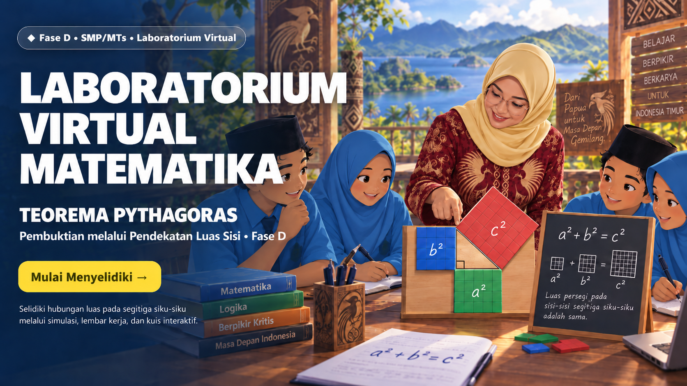

1
Penalaran Kritis (Cinta Ilmu)
Menguji banyak contoh adalah langkah awal; pembuktian menjelaskan mengapa hubungan itu berlaku untuk semua segitiga siku-siku.

Baca bagian Pemantik dan tuliskan dugaan awal. Jangan langsung menerima rumus Pythagoras sebelum melakukan penyelidikan.
Pada Eksplorasi, geser nilai sisi siku-siku a dan b. Amati perubahan sisi miring c serta luas persegi pada setiap sisi.
Aktifkan label dan luas. Periksa apakah jumlah luas persegi pada kedua sisi siku-siku selalu sama dengan luas persegi pada sisi miring, yaitu a² + b² = c².
Perhatikan persegi berpetak pada sisi a, b, dan c. Bandingkan jumlah luas dua persegi pada sisi siku-siku dengan luas persegi pada sisi miring.
Ikuti enam tahap Discovery Learning dari Stimulation hingga Generalization. Jawaban tersimpan otomatis pada perangkat.
Kerjakan 10 soal kuis setelah menyelesaikan penyelidikan dan pembuktian. Gunakan hasil eksplorasi sebagai dasar menjawab.
“Dan janganlah kamu mengikuti apa yang kamu tidak mempunyai pengetahuan tentangnya.”
Ayat ini mengajarkan agar kita tidak menerima sesuatu tanpa dasar ilmu yang jelas. Dalam pembuktian Teorema Pythagoras, murid diajak tidak berhenti pada dugaan atau contoh, tetapi mencari alasan dan bukti mengapa hubungan itu benar.
“Barangsiapa menempuh suatu jalan untuk mencari ilmu, maka Allah akan memudahkan baginya jalan menuju surga.”
Hadis ini menumbuhkan semangat untuk tekun belajar, teliti mengumpulkan data, dan sungguh-sungguh memahami konsep matematika, bukan sekadar menghafal rumus.
Abu al-Wafa adalah matematikawan dan astronom Persia pada masa keemasan ilmu pengetahuan Islam. Ia dikenal mengembangkan pendekatan geometri yang kuat dan memberikan salah satu pembuktian geometris Teorema Pythagoras melalui penyusunan dan pemotongan bangun persegi.
Karyanya menunjukkan bahwa suatu hubungan matematika tidak cukup hanya dipercaya, tetapi perlu dijelaskan dengan alasan yang dapat diperiksa. Ketekunan Abu al-Wafa dalam menghubungkan teori dengan konstruksi geometri menginspirasi kita untuk belajar secara teliti, kreatif, dan berbasis bukti.
Nilai yang dapat diteladani: cinta ilmu, ketelitian, kreativitas, dan kesungguhan dalam mencari pembuktian.
Menguji banyak contoh adalah langkah awal; pembuktian menjelaskan mengapa hubungan itu berlaku untuk semua segitiga siku-siku.
Berani membuat dugaan, memeriksa kesalahan hitung, dan memperbaiki kesimpulan berdasarkan data.
Keteraturan hubungan bilangan dan bentuk menumbuhkan rasa syukur, ketelitian, kejujuran, dan tanggung jawab dalam belajar.
Mendengarkan bukti teman, menguji argumen dengan santun, dan menjelaskan hubungan luas menggunakan bahasa matematika yang jelas.
Menghubungkan segitiga siku-siku dengan pengukuran jarak, konstruksi, desain, dan pemecahan masalah nyata secara efisien.
Menggunakan ilmu ukur untuk berkarya dan menyelesaikan masalah di lingkungan sekitar secara bertanggung jawab.
Di akhir kegiatan, murid mampu menyelidiki hubungan luas persegi pada sisi-sisi segitiga siku-siku dan menemukan Teorema Pythagoras.Murid juga mampu menjelaskan pembuktiannya melalui luas dan menggunakan hubungan tersebut untuk menentukan panjang sisi yang belum diketahui.
Di kawasan Danau Sentani, Papua, sebuah rumah kayu memiliki pintu utama di bagian depan, dengan tangga menuju teras yang tampak dari samping. Jika tinggi teras dari pijakan bawah adalah 1,5 m dan jarak mendatar ke kaki tangga adalah 2 m, berapakah panjang tangga minimal yang dibutuhkan?

Berdasarkan gambar, bagaimana cara menentukan panjang tangga minimal yang dibutuhkan? Setelah situasi tangga dimodelkan menjadi segitiga siku-siku, hubungan apa yang menurutmu dapat digunakan untuk mencari sisi yang belum diketahui?
Setelah situasi tangga dimodelkan, misalkan a menyatakan tinggi teras, b menyatakan jarak mendatar, dan c menyatakan panjang tangga. Sekarang, pilih hubungan yang menurutmu paling mungkin berlaku.
Geser slider untuk mengubah panjang sisi siku-siku a dan b. Nilainya tidak harus selalu bilangan bulat. Amati luas persegi pada ketiga sisi segitiga siku-siku untuk melihat apakah hubungan luasnya tetap konsisten.
Panjang sisinya a, sehingga luasnya a².
Panjang sisinya b, sehingga luasnya b².
Panjang sisinya c, sehingga luasnya c².
Jumlah luas dua persegi pada sisi siku-siku sama dengan luas persegi pada sisi miring: a² + b² = c².
Gunakan slider atau ketik langsung angkanya. Nilai dapat berupa bilangan desimal agar penyelidikan lebih variatif.
Coba beberapa pasangan nilai a dan b, termasuk bilangan desimal. Masukkan hasilnya ke tabel penyelidikan untuk memeriksa apakah hubungan luas selalu tetap.
Bandingkan berjalan mengikuti dua sisi lapangan dengan berjalan melalui diagonal. Apa yang ingin kamu ketahui?
Apa yang akan kamu lakukan agar kesimpulanmu tidak hanya berdasarkan tebakan?
Tuliskan dugaan hubungan antara a, b, dan c beserta alasan awalmu.
Gunakan tab Eksplorasi. Pilih lima pasangan a dan b, lalu catat hasilnya.
| No. | a | b | a² | b² | c² | a²+b² |
|---|
Bandingkan a², b², dan c² pada setiap baris. Hubungan apa yang selalu muncul?
Apakah banyak contoh sudah cukup untuk membuktikan teorema? Jelaskan.
Jelaskan mengapa a² dan b² menyatakan luas dua persegi pada sisi siku-siku, sedangkan c² menyatakan luas persegi pada sisi miring. Apa hubungan yang kamu temukan?
Apa bedanya mengetahui rumus Pythagoras dan memahami mengapa rumus itu benar?